Code
packages <- c(
'tidyverse',
'plyr',
'RCausalML',
'torch',
'tidyquant',
'reshape2',
'scales',
'patchwork',
'igraph'
)
A Structural Causal Model (SCM) is a mathematical framework for representing cause-and-effect relationships in a system. Formally, an SCM is defined as \(\mathcal{M} = (\mathbf{S}, P(\mathbf{U}))\) with structural equations:
\[X_i = f_i(\mathrm{Pa}(X_i),\, U_i),\]
where \(\mathrm{Pa}(X_i)\) denotes the causal parents of \(X_i\) in the directed acyclic graph (DAG), and \(U_i\) are independent exogenous noise variables.
SCMs support Pearl’s three-rung Ladder of Causation:
Deep SCMs replace hand-crafted \(f_i\) with neural networks:
\[X_i = f_{\theta_i}(\mathrm{Pa}(X_i),\, U_i).\]
In a variational deep SCM setup:
This notebook demonstrates three complementary deep learning approaches to structural causal modelling on multivariate time-series data (S&P 500 sector ETF log-returns):
DeepSCM assumes a known adjacency matrix (here derived from a correlation heuristic) and learns nonlinear structural equations on top of that fixed graph:
\[X_t = f_\theta\!\left(X_{t-1:t-p},\, A\right) + \epsilon_t,\]
where \(A\) is fixed (not learned) and \(f_\theta\) consists of per-variable MLPs with variational noise encoders.
Why useful: Stable training when a credible prior graph is available; good baseline for intervention analysis.
Limitation: Performance depends on the quality of the fixed graph.
DECI jointly learns both graph structure and structural equations. It uses a soft learnable adjacency matrix and enforces acyclicity via a NOTEARS-style constraint:
\[h(A) = \operatorname{tr}(e^{A \circ A}) - d = 0.\]
The objective combines reconstruction, KL divergence, DAG regularization, and sparsity:
\[\mathcal{L} = \mathcal{L}_{\text{recon}} + \lambda_{\text{KL}}\,\text{KL} + \lambda_{\text{DAG}}\,h(A) + \lambda_{\text{sparse}}\|A\|_1.\]
Why useful: Learns structure and mechanism together; produces interpretable weighted causal graphs.
Limitation: Hyperparameter-sensitive; optimization can be expensive.
DYNOTEARS extends NOTEARS-style optimization to time-series causal discovery with explicit lag structure:
\[X_t = W^{(0)}X_t + \sum_{k=1}^{p} W^{(k)} X_{t-k} + \epsilon_t,\]
where \(W^{(0)}\) captures instantaneous effects and \(W^{(k)}\) captures directed lag-\(k\) effects. Acyclicity is imposed via a smooth constraint on the aggregated weight matrix:
\[\min_{\{W^{(k)}\}} \mathcal{L}_{\text{recon}} + \lambda_1 \sum_{k=0}^{p} \|W^{(k)}\|_1 + \lambda_2\, h(\cdot).\]
Why useful: Explicitly separates lagged directional effects; produces interpretable causal graphs for multivariate time series.
Limitation: Sensitive to regularization and threshold settings.
We use {RCausalML}’s deep_scm(), deci_model(), and dynotears() implementations (torch-backed when available) to fit all three models on S&P 500 sector ETF daily log-return data (2018–2024).
packages <- c(
'tidyverse',
'plyr',
'RCausalML',
'torch',
'tidyquant',
'reshape2',
'scales',
'patchwork',
'igraph'
)# Install missing packages
#new_packages <- packages[!(packages %in% installed.packages()[,"Package"])]
#if(length(new_packages)) install.packages(new_packages)invisible(lapply(packages, function(pkg) {
suppressPackageStartupMessages(library(pkg, character.only = TRUE))
}))set.seed(42)
device_use <- NULL
if (requireNamespace("torch", quietly = TRUE)) {
device_use <- if (torch::cuda_is_available()) "cuda" else "cpu"
torch::torch_manual_seed(42)
}
cat(sprintf("Using device: %s\n", device_use))Using device: cudaThis section downloads S&P 500 sector ETF prices (the same universe used in the Neural Granger Causality notebook), converts them to standardized log-returns, and builds lagged input/output arrays for training.
Note: If online market data is unavailable, the notebook automatically falls back to synthetic demo data so all downstream cells remain runnable.
TICKERS <- c(
"XLF" = "Financials",
"XLE" = "Energy",
"XLK" = "Technology",
"XLV" = "Healthcare",
"XLI" = "Industrials",
"XLY" = "ConsumerDisc",
"XLP" = "ConsumerStap",
"XLU" = "Utilities"
)
# Download close prices via tidyquant (Yahoo Finance backend)
fetch_close_prices <- function(tickers, start = "2018-01-01", end = "2024-01-01") {
tryCatch({
raw <- tidyquant::tq_get(names(tickers), get = "stock.prices",
from = start, to = end, complete_cases = TRUE)
if (is.null(raw) || nrow(raw) == 0) return(NULL)
raw |>
dplyr::select(symbol, date, adjusted) |>
tidyr::pivot_wider(names_from = symbol, values_from = adjusted) |>
dplyr::arrange(date) |>
tidyr::drop_na()
}, error = function(e) NULL)
}
close_wide <- fetch_close_prices(TICKERS)
if (is.null(close_wide) || nrow(close_wide) < 30) {
message("Warning: market data unavailable; using synthetic demo data.")
set.seed(42)
n_steps <- 1400L
base <- matrix(rnorm(n_steps * length(TICKERS), 0, 0.01),
nrow = n_steps, ncol = length(TICKERS))
for (i in seq(2L, n_steps)) base[i, ] <- base[i, ] + 0.25 * base[i - 1L, ]
returns_df <- as.data.frame(base)
colnames(returns_df) <- unname(TICKERS)
data_np <- scale(base)
} else {
# Compute log-returns
price_mat <- as.matrix(close_wide[, names(TICKERS)])
log_ret <- log(price_mat[-1L, ] / price_mat[-nrow(price_mat), ])
colnames(log_ret) <- unname(TICKERS[colnames(price_mat)])
returns_df <- as.data.frame(log_ret)
data_np <- scale(log_ret)
}
VAR_NAMES <- colnames(data_np)
d <- ncol(data_np)
Tt <- nrow(data_np)
cat(sprintf("d=%d variables, T=%d\n", d, Tt))d=8 variables, T=1508LAG <- 5L
# Build 3-D array (N x lag x d) of lagged windows
build_lag_dataset <- function(data, lag) {
N <- nrow(data) - lag
x_seq <- array(NA_real_, dim = c(N, lag, ncol(data)))
y_mat <- matrix(NA_real_, nrow = N, ncol = ncol(data))
for (t in seq_len(N)) {
x_seq[t, , ] <- data[t:(t + lag - 1L), , drop = FALSE]
y_mat[t, ] <- data[t + lag, ]
}
list(x_seq = x_seq, y_mat = y_mat)
}
lag_data <- build_lag_dataset(data_np, LAG)
X_seq <- lag_data$x_seq
Y_mat <- lag_data$y_mat
split <- floor(0.8 * nrow(X_seq))
X_tr <- X_seq[seq_len(split), , ]
X_val <- X_seq[(split + 1L):nrow(X_seq), , ]
Y_tr <- Y_mat[seq_len(split), ]
Y_val <- Y_mat[(split + 1L):nrow(Y_mat), ]
cat(sprintf("Train: (%d, %d, %d) Val: (%d, %d, %d)\n",
dim(X_tr)[1], dim(X_tr)[2], dim(X_tr)[3],
dim(X_val)[1], dim(X_val)[2], dim(X_val)[3]))Train: (1202, 5, 8) Val: (301, 5, 8)The NOTEARS acyclicity penalty provides a continuous, differentiable condition that equals zero if and only if a matrix encodes a DAG:
\[h(A) = \operatorname{tr}(e^{A \odot A}) - d.\]
In R (with the torch package), this is computed as:
# Acyclicity penalty h(A) = tr(expm(A*A)) - d [scalar, on CPU]
acyclicity_penalty_r <- function(A_mat) {
if (requireNamespace("torch", quietly = TRUE)) {
A_t <- torch::torch_tensor(A_mat, dtype = torch::torch_float32())
val <- (torch::torch_matrix_exp(A_t * A_t))$trace()$item() - nrow(A_mat)
return(val)
}
# Fallback: spectral-radius approximation
ev <- Re(eigen(A_mat * A_mat, only.values = TRUE)$values)
sum(exp(ev)) - nrow(A_mat)
}
# Threshold a soft adjacency matrix to binary
threshold_adjacency <- function(A_soft, threshold = 0.35) {
A_bin <- (abs(A_soft) > threshold) * 1.0
diag(A_bin) <- 0.0
A_bin
}DeepSCM uses a fixed adjacency matrix. Here we derive it from the absolute correlation among the standardized log-return series:
Fixed adjacency (correlation > 0.25):print(A_fixed) Financials Energy Technology Healthcare Industrials ConsumerDisc
Financials 0 1 1 1 1 1
Energy 1 0 1 1 1 1
Technology 1 1 0 1 1 1
Healthcare 1 1 1 0 1 1
Industrials 1 1 1 1 0 1
ConsumerDisc 1 1 1 1 1 0
ConsumerStap 1 1 1 1 1 1
Utilities 1 1 1 1 1 1
ConsumerStap Utilities
Financials 1 1
Energy 1 1
Technology 1 1
Healthcare 1 1
Industrials 1 1
ConsumerDisc 1 1
ConsumerStap 0 1
Utilities 1 0plot_scm_dag(A_fixed, VAR_NAMES, "Fixed Graph Used by DeepSCM (corr > 0.25)")
This cell trains the DeepSCM model using the fixed correlation-derived adjacency matrix.
Each variable’s structural equation is a small MLP conditioned on its graph-parents plus a per-variable latent noise vector inferred by a variational encoder. Training minimises a reconstruction loss plus a KL regularisation term (ELBO objective).
deep_scm_fit <- deep_scm(
x_seq = X_tr,
adjacency = A_fixed,
lag = LAG,
latent_dim = 4L,
hidden = 64L,
n_epochs = 25L,
batch_size = 64L,
lr = 1e-3,
lam_kl = 0.05,
verbose = TRUE,
device = device_use
)
cat("DeepSCM training finished.\n")DeepSCM training finished.Final training loss: 0.1810loss_df_scm <- data.frame(
epoch = seq_along(deep_scm_fit$train_losses),
loss = deep_scm_fit$train_losses
)
ggplot(loss_df_scm, aes(x = epoch, y = loss)) +
geom_line(colour = "#1b9e77", linewidth = 0.9) +
geom_point(data = loss_df_scm[loss_df_scm$epoch %% 5 == 0, ],
colour = "#1b9e77", size = 2) +
labs(
title = "DeepSCM Training Loss (ELBO)",
x = "Epoch",
y = "Loss"
) +
theme_minimal()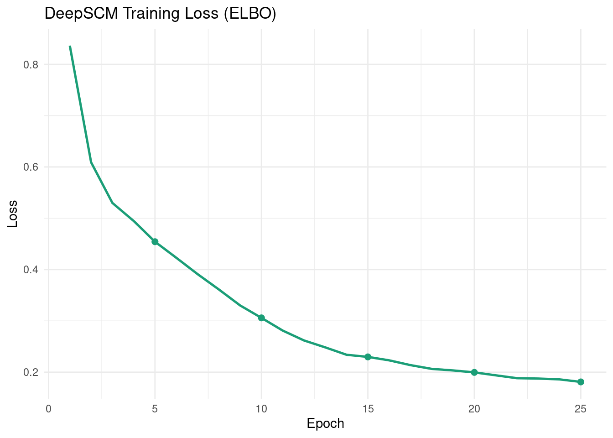
This cell trains the DECI model which jointly discovers the causal adjacency matrix and the structural equations. After training, the soft adjacency is thresholded to obtain a binary DAG.
deci_fit <- deci_model(
x_seq = X_tr,
lag = LAG,
latent_dim = 8L,
hidden = 64L,
n_epochs = 40L,
batch_size = 64L,
lr = 1e-3,
lam_kl = 0.05,
lam_dag = 1.0,
lam_sparse = 0.01,
threshold = 0.35,
verbose = TRUE,
device = device_use
)
cat("DECI training finished.\n")DECI training finished.Final training loss: 1.0947loss_df_deci <- data.frame(
epoch = seq_along(deci_fit$train_losses),
loss = deci_fit$train_losses
)
ggplot(loss_df_deci, aes(x = epoch, y = loss)) +
geom_line(colour = "#d95f02", linewidth = 0.9) +
geom_point(data = loss_df_deci[loss_df_deci$epoch %% 10 == 0, ],
colour = "#d95f02", size = 2) +
labs(
title = "DECI Training Loss (ELBO + DAG + Sparsity)",
x = "Epoch",
y = "Loss"
) +
theme_minimal()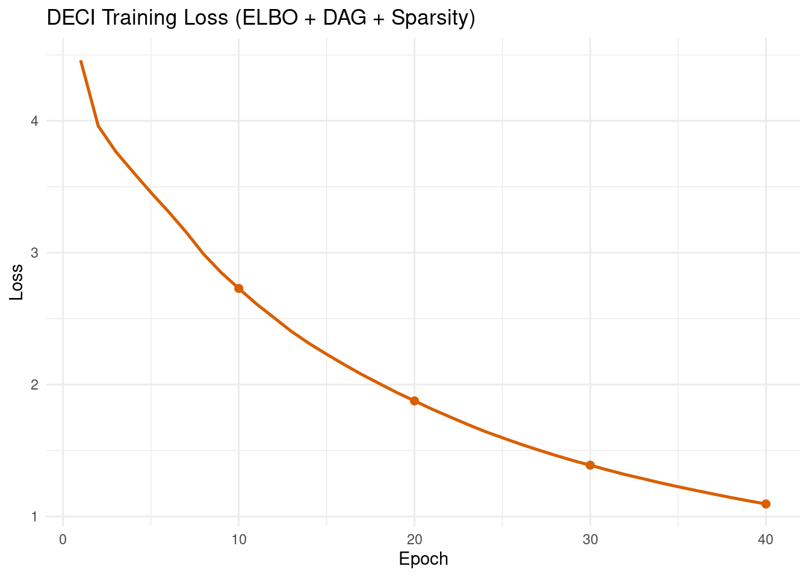
Approx h(A_soft): 0.768065Edges in thresholded graph (tau=0.35): 50plot_scm_dag(A_soft, VAR_NAMES, "DECI Soft Adjacency (learned)")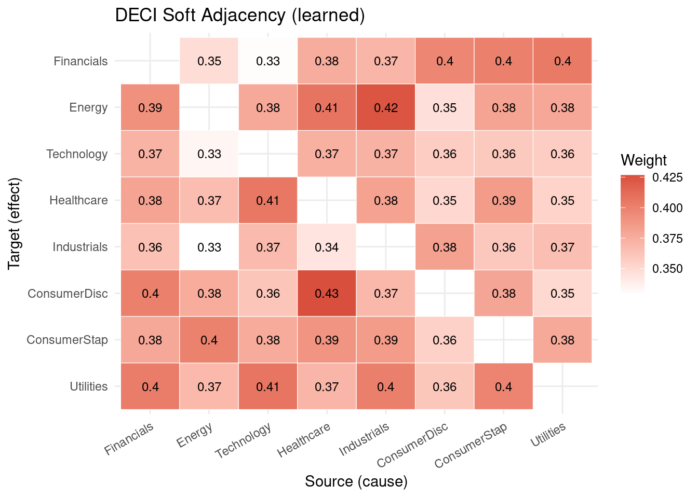
plot_scm_dag(A_bin, VAR_NAMES, "DECI Thresholded Adjacency (binary DAG)")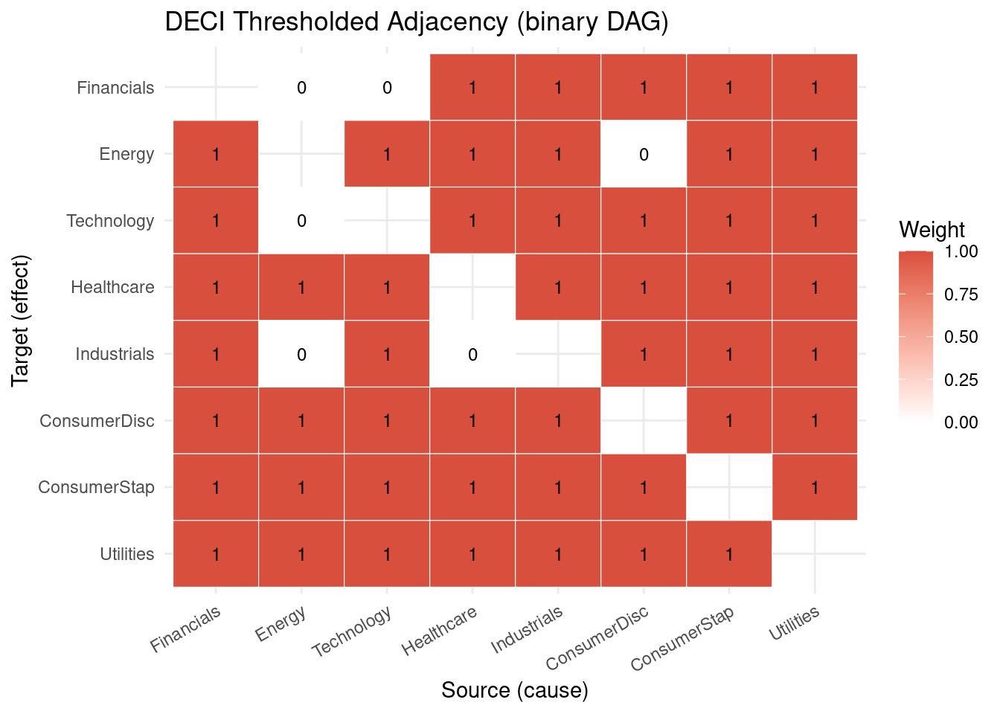
Intervention analysis assesses the effects of actively changing (intervening on) one or more variables within a system. A do-operation \(do(X = x)\) forces a variable to take on a specific value and evaluates how this change propagates through the causal graph to affect other variables.
The Average Treatment Effect (ATE) measures the expected difference in an outcome variable due to the intervention:
\[\text{ATE} = \mathbb{E}[Y \mid do(X = 1)] - \mathbb{E}[Y \mid do(X = -1)].\]
source_name <- "Energy"
target_name <- "Industrials"
source_idx <- which(VAR_NAMES == source_name)
target_idx <- which(VAR_NAMES == target_name)
# DECI ATE via Monte-Carlo averaging over the decoder
ate_val <- ate_deci(
object = deci_fit,
newdata = X_val,
source = source_idx,
target = target_idx,
do_values = c(-1.0, 1.0),
n_samples = min(200L, nrow(X_val))
)
cat(sprintf("Estimated ATE of do(%s) on %s (DECI): %.4f\n",
source_name, target_name, ate_val))Estimated ATE of do(Energy) on Industrials (DECI): -0.0049# DeepSCM intervention: compare predicted target under low vs. high intervention
n_int <- min(128L, nrow(X_val))
int_result <- intervene_deep_scm(
object = deep_scm_fit,
newdata = X_val[seq_len(n_int), , ],
target_var = source_idx,
do_values = c(-1.0, 1.0)
)
scm_delta <- int_result$delta[target_idx]
cat(sprintf("DeepSCM intervention delta on %s: %.4f\n", target_name, scm_delta))DeepSCM intervention delta on Industrials: 0.5169diff_vec <- int_result$pred_high[, target_idx] - int_result$pred_low[, target_idx]
ggplot(data.frame(delta = diff_vec), aes(x = delta)) +
geom_histogram(bins = 30, fill = "#7570b3", colour = "white", alpha = 0.85) +
geom_vline(xintercept = mean(diff_vec), colour = "#e7298a", linewidth = 1,
linetype = "dashed") +
annotate("text",
x = mean(diff_vec) + 0.02 * diff(range(diff_vec)),
y = Inf, vjust = 2,
label = sprintf("Mean delta = %.4f", mean(diff_vec)),
colour = "#e7298a", size = 3.5) +
labs(
title = sprintf(
"DeepSCM Intervention: do(%s) → %s response distribution",
source_name, target_name
),
x = sprintf("Predicted Δ%s under do(%s=+1) − do(%s=−1)",
target_name, source_name, source_name),
y = "Count"
) +
theme_minimal()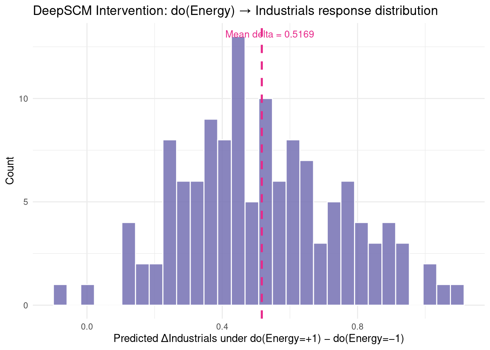
DYNOTEARS extends NOTEARS-style continuous optimization to time-series causal discovery by modelling lagged dependencies while enforcing acyclicity on the learned structure.
For lag order \(p\), the formulation is:
\[X_t = W^{(0)}X_t + \sum_{k=1}^{p} W^{(k)} X_{t-k} + \epsilon_t,\]
where \(W^{(0)}\) captures same-time (instantaneous) effects and \(W^{(k)}\) captures directed lag-\(k\) effects. The augmented-Lagrangian objective penalizes reconstruction error, L1 sparsity, and DAG violation simultaneously.
Why useful in practice:
cat("Training DYNOTEARS ...\n")Training DYNOTEARS ...dyno_fit <- dynotears(
x_seq = X_tr,
y_mat = Y_tr,
lag = LAG,
n_epochs = 300L,
batch_size = 256L,
lr = 3e-3,
lambda_l1 = 0.02,
rho_init = 1.0,
threshold = 0.08,
verbose = TRUE,
device = device_use
)
A_dynotears <- dyno_fit$A_binary
W_agg <- dyno_fit$W_agg
rownames(A_dynotears) <- VAR_NAMES
colnames(A_dynotears) <- VAR_NAMES
cat("\nDYNOTEARS recovered adjacency:\n")
DYNOTEARS recovered adjacency:print(A_dynotears) Financials Energy Technology Healthcare Industrials ConsumerDisc
Financials 0 0 0 0 0 0
Energy 0 0 0 0 0 0
Technology 1 0 0 0 0 0
Healthcare 1 0 0 0 0 0
Industrials 0 0 0 0 0 0
ConsumerDisc 1 0 0 0 0 0
ConsumerStap 1 0 0 0 0 0
Utilities 1 0 0 0 0 0
ConsumerStap Utilities
Financials 0 0
Energy 0 0
Technology 0 0
Healthcare 0 0
Industrials 0 0
ConsumerDisc 0 0
ConsumerStap 0 0
Utilities 1 0plot_scm_dag(W_agg, VAR_NAMES, "DYNOTEARS Aggregated Lag Weights |W|")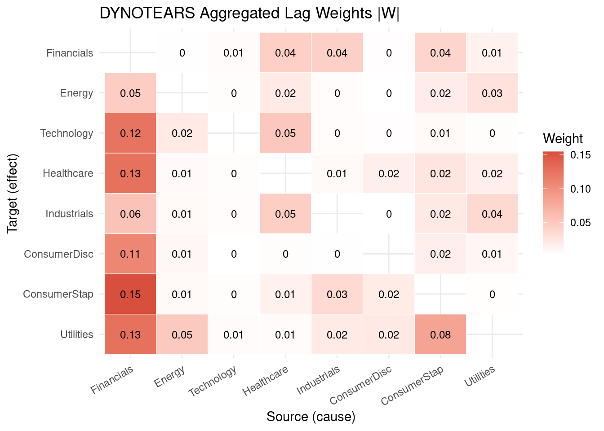
dt_loss_df <- data.frame(
epoch = seq_along(dyno_fit$train_losses),
mse = dyno_fit$train_losses,
dag_h = dyno_fit$dag_vals
)
p_mse <- ggplot(dt_loss_df, aes(x = epoch, y = mse)) +
geom_line(colour = "#e41a1c", linewidth = 0.8) +
labs(title = "DYNOTEARS MSE Loss", x = "Epoch", y = "MSE") +
theme_minimal()
p_dag <- ggplot(dt_loss_df, aes(x = epoch, y = dag_h)) +
geom_line(colour = "#377eb8", linewidth = 0.8) +
geom_hline(yintercept = 1e-3, colour = "red", linetype = "dashed") +
scale_y_log10() +
labs(title = "DYNOTEARS DAG Constraint h(W)", x = "Epoch",
y = "|h(W)| (log scale)") +
theme_minimal()
p_mse + p_dag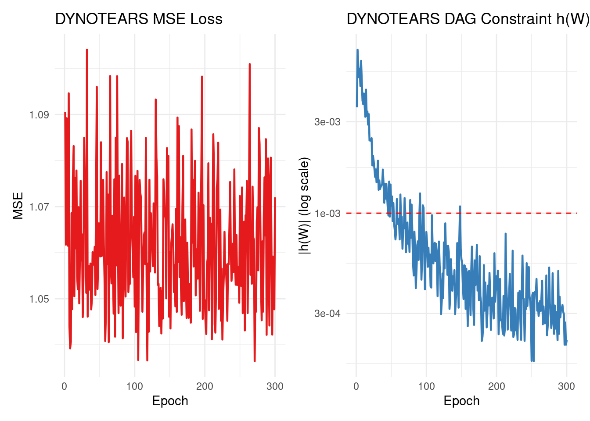
This section compares the causal graphs produced by all three models. Since no ground-truth DAG is available for financial return data, we report graph statistics (density, in/out degree) and provide side-by-side visual comparisons.
graph_stats_r <- function(A_bin, name = "") {
g <- igraph::graph_from_adjacency_matrix(
A_bin, mode = "directed", weighted = NULL, diag = FALSE
)
d_n <- igraph::gorder(g)
e_n <- igraph::gsize(g)
dens <- if (d_n > 1) e_n / (d_n * (d_n - 1)) else 0.0
data.frame(
model = name,
nodes = d_n,
edges = e_n,
density = round(dens, 4),
is_dag = igraph::is_dag(g),
max_in_degree = if (d_n > 0) max(igraph::degree(g, mode = "in")) else 0L,
max_out_degree = if (d_n > 0) max(igraph::degree(g, mode = "out")) else 0L
)
}
method_graphs <- list(
"DeepSCM (Fixed)" = A_fixed,
"DECI (Thresholded)" = A_bin,
"DYNOTEARS" = A_dynotears
)
stats_all <- do.call(rbind, lapply(names(method_graphs), function(nm) {
graph_stats_r((method_graphs[[nm]] > 0) * 1L, nm)
}))
rownames(stats_all) <- NULL
cat("Graph statistics:\n")Graph statistics:print(stats_all) model nodes edges density is_dag max_in_degree max_out_degree
1 DeepSCM (Fixed) 8 56 1.0000 FALSE 7 7
2 DECI (Thresholded) 8 50 0.8929 FALSE 7 7
3 DYNOTEARS 8 6 0.1071 TRUE 5 2plot_comparison_heatmaps <- function(mats, names_vec, var_names) {
plots <- lapply(seq_along(mats), function(i) {
A <- as.matrix(mats[[i]])
diag(A) <- NA_real_
rownames(A) <- var_names
colnames(A) <- var_names
df <- reshape2::melt(A, na.rm = TRUE)
colnames(df) <- c("Target", "Source", "Weight")
df$Target <- factor(df$Target, levels = rev(var_names))
df$Source <- factor(df$Source, levels = var_names)
ggplot(df, aes(x = Source, y = Target, fill = Weight)) +
geom_tile(colour = "white") +
geom_text(aes(label = round(Weight, 2)), size = 2.6, colour = "black") +
scale_fill_gradient(low = "white", high = "#D94F3D",
na.value = "grey90", name = "Weight") +
labs(title = names_vec[[i]], x = "Source (cause)", y = "Target (effect)") +
theme_minimal(base_size = 9) +
theme(axis.text.x = element_text(angle = 30, hjust = 1))
})
do.call(patchwork::wrap_plots, c(plots, list(ncol = 3)))
}
heatmap_mats <- list(A_fixed, A_soft, W_agg)
heatmap_names <- list("DeepSCM Fixed Graph", "DECI Soft Adjacency",
"DYNOTEARS |W| Aggregated")
plot_comparison_heatmaps(heatmap_mats, heatmap_names, VAR_NAMES)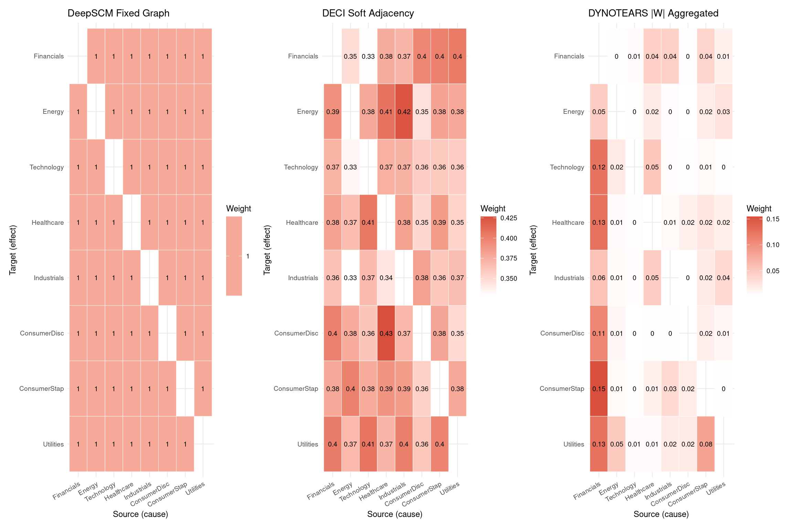
draw_causal_igraph <- function(A_bin, title, var_names,
node_colour = "steelblue") {
A_bin <- (as.matrix(A_bin) > 0) * 1L
diag(A_bin) <- 0L
g <- igraph::graph_from_adjacency_matrix(
A_bin, mode = "directed", weighted = NULL, diag = FALSE
)
igraph::V(g)$name <- var_names
igraph::V(g)$color <- node_colour
igraph::V(g)$label <- var_names
igraph::V(g)$size <- 28
igraph::V(g)$label.color <- "white"
igraph::V(g)$label.cex <- 0.8
igraph::E(g)$color <- "grey50"
igraph::E(g)$arrow.size <- 0.6
old_par <- par(mar = c(0, 0, 2, 0))
plot(g,
layout = igraph::layout_in_circle(g),
main = title,
vertex.frame.color = "white")
par(old_par)
}
par(mfrow = c(1, 3))
draw_causal_igraph(A_fixed, "DeepSCM (Fixed Graph)", VAR_NAMES, "steelblue")
draw_causal_igraph(A_bin, "DECI (Thresholded)", VAR_NAMES, "darkorange")
draw_causal_igraph(A_dynotears, "DYNOTEARS", VAR_NAMES, "mediumpurple")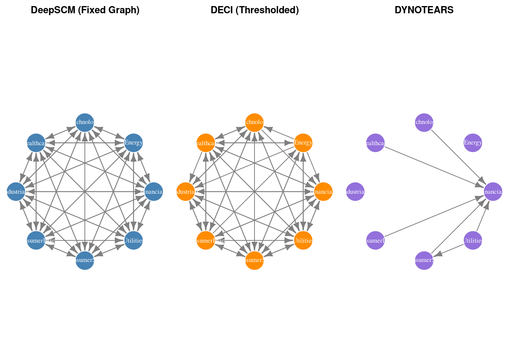
max_ep_scm <- length(deep_scm_fit$train_losses)
max_ep_deci <- length(deci_fit$train_losses)
df_losses <- bind_rows(
data.frame(epoch = seq_len(max_ep_scm),
loss = deep_scm_fit$train_losses,
model = "DeepSCM"),
data.frame(epoch = seq_len(max_ep_deci),
loss = deci_fit$train_losses,
model = "DECI")
)
ggplot(df_losses, aes(x = epoch, y = loss, colour = model)) +
geom_line(linewidth = 0.9) +
scale_colour_manual(values = c("DeepSCM" = "#1b9e77", "DECI" = "#d95f02")) +
labs(
title = "Training Loss: DeepSCM vs DECI",
x = "Epoch",
y = "Loss",
colour = NULL
) +
theme_minimal()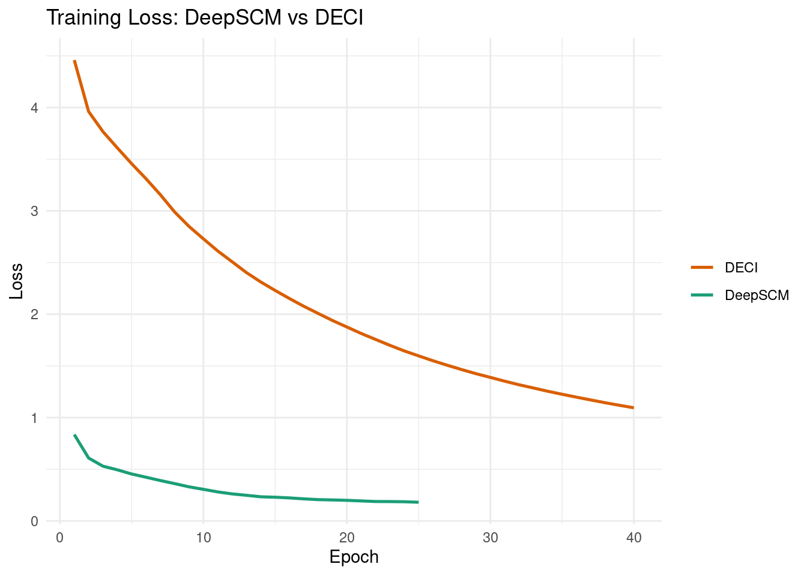
pred_scm <- predict(deep_scm_fit, newdata = X_val)
pred_deci <- predict(deci_fit, newdata = X_val)
pred_dyno <- predict(dyno_fit, newdata = X_val)
mse_scm <- mean((pred_scm - Y_val)^2)
mse_deci <- mean((pred_deci - Y_val)^2)
mse_dyno <- mean((pred_dyno - Y_val)^2)
val_df <- data.frame(
model = c("DeepSCM", "DECI", "DYNOTEARS"),
val_mse = c(mse_scm, mse_deci, mse_dyno)
)
cat("Validation MSE (next-step reconstruction):\n")Validation MSE (next-step reconstruction):print(val_df) model val_mse
1 DeepSCM 1.0088041
2 DECI 1.1097024
3 DYNOTEARS 0.5762974ggplot(val_df, aes(x = reorder(model, val_mse), y = val_mse, fill = model)) +
geom_col(show.legend = FALSE, alpha = 0.85) +
scale_fill_manual(values = c(
"DeepSCM" = "#1b9e77",
"DECI" = "#d95f02",
"DYNOTEARS" = "#7570b3"
)) +
coord_flip() +
labs(
title = "Validation MSE by Model",
x = NULL,
y = "Mean Squared Error"
) +
theme_minimal()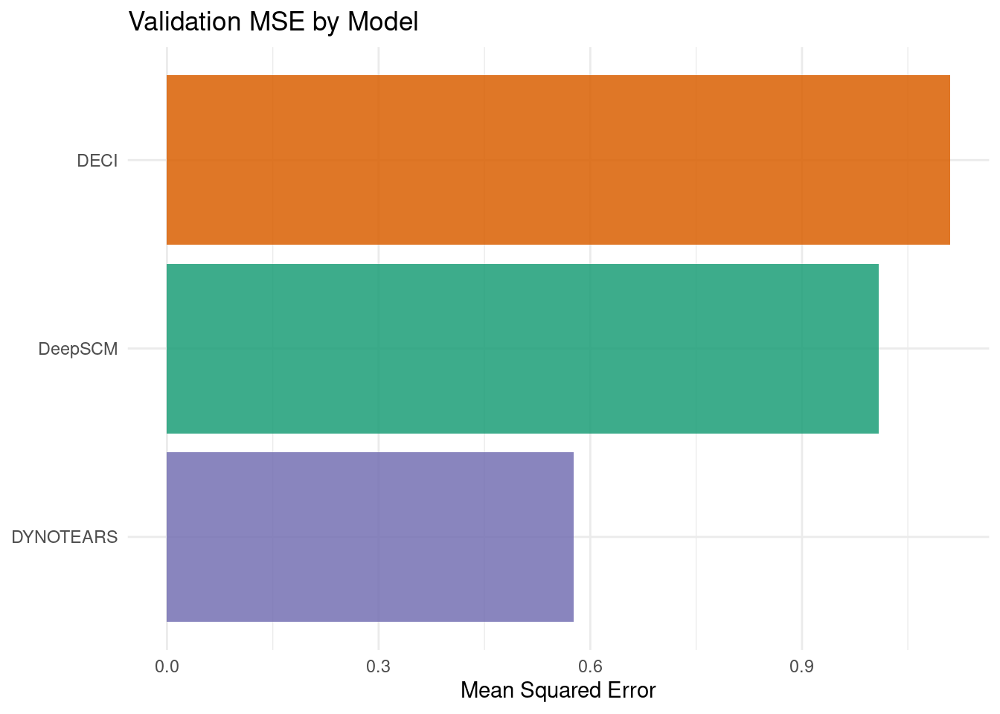
LAG, graph threshold, DAG/sparsity penalties) strongly affect the discovered structure; domain knowledge and sensitivity analysis are essential for robust conclusions.In this notebook, we explored three deep learning-based approaches to structural causal modelling on S&P 500 sector ETF multivariate time-series:
DeepSCM uses a fixed correlation-derived adjacency matrix and learns nonlinear structural equations via variational per-variable noise encoders. Its ELBO training is stable and fast, making it a useful baseline when a credible prior graph is available.
DECI jointly learns both the causal graph structure and structural equations using a NOTEARS acyclicity penalty \(h(A) = \operatorname{tr}(e^{A \odot A}) - d\) and an ELBO-style variational objective. The soft adjacency matrix can be thresholded to obtain an interpretable DAG.
DYNOTEARS extends NOTEARS to the time-series setting with explicit lag-specific weight matrices \(W^{(k)}\), enforcing acyclicity via an augmented-Lagrangian scheme. Its output is a multi-lag directed graph useful for temporal influence analysis.
Key takeaways:
deep_scm(), deci_model(), and dynotears() provide clean torch-backed interfaces for all three methods with minimal setup.05-04-01-DeepCausalML-timeseries-neural-granger-cusuality-r.qmd — Neural Granger Causality (cMLP, cLSTM, SRU, NRI) on the same sector ETF universe.05-03-05-DeepCausalML-causal-structural-learning-regularization-CASTLE-r.qmd — CASTLE: simultaneous supervised prediction and causal graph discovery.05-03-04-DeepCausalML-DAGMA-NoCurl-r.qmd — DAGMA and DAG-NoCurl: acyclicity via log-det and curl-free constraints.